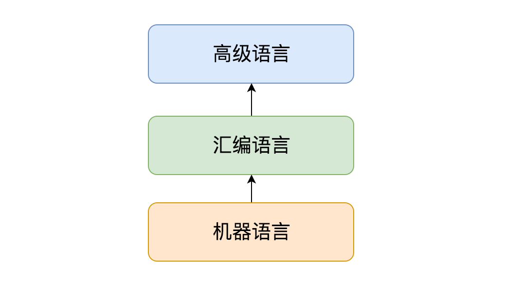
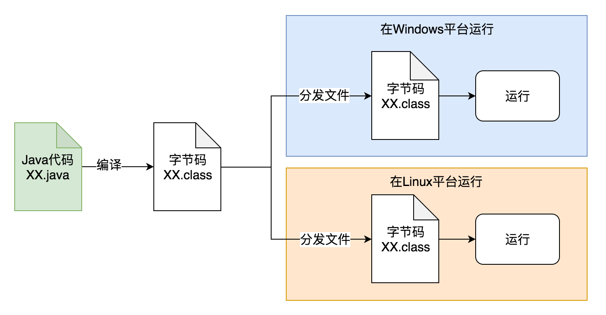

- 01 阅读此专栏的正确姿势.md.html
- 02 环境准备：千里之行，始于足下.md.html
- 03 常用性能指标：没有量化，就没有改进.md.html
- 04 JVM 基础知识：不积跬步，无以至千里.md.html
- 05 Java 字节码技术：不积细流，无以成江河.md.html
- 06 Java 类加载器：山不辞土，故能成其高.md.html
- 07 Java 内存模型：海不辞水，故能成其深.md.html
- 08 JVM 启动参数详解：博观而约取、厚积而薄发.md.html
- 09 JDK 内置命令行工具：工欲善其事，必先利其器.md.html
- 10 JDK 内置图形界面工具：海阔凭鱼跃，天高任鸟飞.md.html
- 11 JDWP 简介：十步杀一人，千里不留行.md.html
- 12 JMX 与相关工具：山高月小，水落石出.md.html
- 13 常见的 GC 算法（GC 的背景与原理）.md.html
- 14 常见的 GC 算法（ParallelCMSG1）.md.html
- 15 Java11 ZGC 和 Java12 Shenandoah 介绍：苟日新、日日新、又日新.md.html
- 16 Oracle GraalVM 介绍：会当凌绝顶、一览众山小.md.html
- 17 GC 日志解读与分析（基础配置）.md.html
- 18 GC 日志解读与分析（实例分析上篇）.md.html
- 19 GC 日志解读与分析（实例分析中篇）.md.html
- 20 GC 日志解读与分析（实例分析下篇）.md.html
- 21 GC 日志解读与分析（番外篇可视化工具）.md.html
- 22 JVM 的线程堆栈等数据分析：操千曲而后晓声、观千剑而后识器.md.html
- 23 内存分析与相关工具上篇（内存布局与分析工具）.md.html
- 24 内存分析与相关工具下篇（常见问题分析）.md.html
- 25 FastThread 相关的工具介绍：欲穷千里目，更上一层楼.md.html
- 26 面临复杂问题时的几个高级工具：它山之石，可以攻玉.md.html
- 27 JVM 问题排查分析上篇（调优经验）.md.html
- 28 JVM 问题排查分析下篇（案例实战）.md.html
- 29 GC 疑难情况问题排查与分析（上篇）.md.html
- 30 GC 疑难情况问题排查与分析（下篇）.md.html
- 31 JVM 相关的常见面试问题汇总：运筹策帷帐之中，决胜于千里之外.md.html
- 32 应对容器时代面临的挑战：长风破浪会有时、直挂云帆济沧海.md.html
- 捐赠
04 JVM 基础知识：不积跬步，无以至千里
前面的章节我们介绍了 JDK 和 JVM 的关系以及环境准备等，本节我们来探讨一下 JVM 的基础知识，包括以下内容：
- 常见的编程语言类型
- 关于跨平台、运行时（Runtime）与虚拟机（VM）
- 关于内存管理和垃圾回收（GC）
3.1 常见的编程语言类型
我们都知道 Java 是一种基于虚拟机的静态类型编译语言。那么常见的语言可以怎么分类呢？
1）编程语言分类
首先，我们可以把形形色色的编程从底向上划分为最基本的三大类：机器语言、汇编语言、高级语言。

按《计算机编程语言的发展与应用》一文里的定义：计算机编程语言能够实现人与机器之间的交流和沟通，而计算机编程语言主要包括汇编语言、机器语言以及高级语言，具体内容如下：
- 机器语言：这种语言主要是利用二进制编码进行指令的发送，能够被计算机快速地识别，其灵活性相对较高，且执行速度较为可观，机器语言与汇编语言之间的相似性较高，但由于具有局限性，所以在使用上存在一定的约束性。
- 汇编语言：该语言主要是以缩写英文作为标符进行编写的，运用汇编语言进行编写的一般都是较为简练的小程序，其在执行方面较为便利，但汇编语言在程序方面较为冗长，所以具有较高的出错率。
- 高级语言：所谓的高级语言，其实是由多种编程语言结合之后的总称，其可以对多条指令进行整合，将其变为单条指令完成输送，其在操作细节指令以及中间过程等方面都得到了适当的简化，所以，整个程序更为简便，具有较强的操作性，而这种编码方式的简化，使得计算机编程对于相关工作人员的专业水平要求不断放宽。
简言之：机器语言是直接给机器执行的二进制指令，每种 CPU 平台都有对应的机器语言。
而汇编语言则相当于是给机器执行的指令，按照人可以理解的助记符表示，这样代码就非常长，但是性能也很好。
高级语言则是为了方便人来理解，进而快速设计和实现程序代码，一般跟机器语言和汇编语言的指令已经完全没有关系了，代码编写完成后通过编译或解释，转换成汇编码或机器码，之后再传递给计算机去执行。
所以机器语言和汇编语言都是跟目标机器的 CPU 架构有直接联系，而高级语言一般就没有关系了，高级语言高级就高级在，一份代码往往是可以跨不同的目标机器的 CPU 架构的，不管是 x86 还是其他 CPU，尽管不同 CPU 支持的指令集略有不同，但是都在编译或解释过程之后，变成实际平台的目标代码，进而代码的开发者很大程度上不需要关心目标平台的差异性。这一点非常重要，因为现代计算机软件系统的开发，往往开发者、测试者、部署运维者，并不是一拨人，特别是随着公有云的快速发展，我们甚至都不清楚自己的软件系统在容器下到底是什么物理架构。
2）高级语言分类
如果按照有没有虚拟机来划分，高级编程语言可分为两类：
- 有虚拟机：Java，Lua，Ruby，部分 JavaScript 的实现等等
- 无虚拟机：C，C++，C#，Golang，以及大部分常见的编程语言
很奇怪的一件事儿，C#、Golang 有 GC（垃圾回收），也有运行时（Runtime），但是没有虚拟机（VM），为什么会这样设计呢? 下文会详细讨论这个事情。
如果按照变量是不是有确定的类型，还是类型可以随意变化来划分，高级编程语言可以分为：
- 静态类型：Java，C，C++ 等等
- 动态类型：所有脚本类型的语言
如果按照是编译执行，还是解释执行，可以分为：
- 编译执行：C，C++，Golang，Rust，C#，Java，Scala，Clojure，Kotlin，Swift 等等
- 解释执行：JavaScript 的部分实现和 NodeJS，Python，Perl，Ruby 等等
这里面，C# 和 Java 都是编译后生成了一种中间类型的目标代码（类似汇编），但不是汇编或机器码，在C#中称为 微软中间语言（MSIL），在 Java 里叫做 Java 字节码（Java bytecode）。
虽然一般把 JavaScript 当做解释执行语言，但如今不少实现引擎都支持编译，比如 Google V8 和 Oracle Nashorn。
此外，我们还可以按照语言特点分类：
- 面向过程：C，Basic，Pascal，Fortran 等等；
- 面向对象：C++，Java，Ruby，Smalltalk 等等；
- 函数式编程：LISP、Haskell、Erlang、OCaml、Clojure、F# 等等。
有的甚至可以划分为纯面向对象语言，例如 Ruby，所有的东西都是对象（Java 不是所有东西都是对象，比如基本类型 int、long 等等，就不是对象，但是它们的包装类 Integer、Long 则是对象）。 还有既可以当做编译语言又可以当做脚本语言的，例如 Groovy 等语言。
3.2 关于跨平台
现在我们聊聊跨平台，为什么要跨平台，因为我们希望所编写的代码和程序，在源代码级别或者编译后，可以运行在多种不同的系统平台上，而不需要为了各个平台的不同点而去实现两套代码。典型地，我们编写一个 web 程序，自然希望可以把它部署到 Windows 平台上，也可以部署到 Linux 平台上，甚至是 MacOS 系统上。
这就是跨平台的能力，极大地节省了开发和维护成本，赢得了商业市场上的一致好评。
这样来看，一般来说解释型语言都是跨平台的，同一份脚本代码，可以由不同平台上的解释器解释执行。但是对于编译型语言，存在两种级别的跨平台： 源码跨平台和二进制跨平台。
1、典型的源码跨平台（C++）： 
2、典型的二进制跨平台（Java 字节码）： 
可以看到，C++ 里我们需要把一份源码，在不同平台上分别编译，生成这个平台相关的二进制可执行文件，然后才能在相应的平台上运行。 这样就需要在各个平台都有开发工具和编译器，而且在各个平台所依赖的开发库都需要是一致或兼容的。 这一点在过去的年代里非常痛苦，被戏称为 “依赖地狱”。
C++ 的口号是“一次编写，到处（不同平台）编译”，但实际情况上是一编译就报错，变成了 “一次编写，到处调试，到处找依赖、改配置”。 大家可以想象，你编译一份代码，发现缺了几十个依赖，到处找还找不到，或者找到了又跟本地已有的版本不兼容，这是一件怎样令人绝望的事情。
而 Java 语言通过虚拟机技术率先解决了这个难题。 源码只需要编译一次，然后把编译后的 class 文件或 jar 包，部署到不同平台，就可以直接通过安装在这些系统中的 JVM 上面执行。 同时可以把依赖库（jar 文件）一起复制到目标机器，慢慢地又有了可以在各个平台都直接使用的 Maven 中央库（类似于 linux 里的 yum 或 apt-get 源，macos 里的 homebrew，现代的各种编程语言一般都有了这种包依赖管理机制：python 的 pip，dotnet 的 nuget，NodeJS 的 npm，golang 的 dep，rust 的 cargo 等等）。这样就实现了让同一个应用程序在不同的平台上直接运行的能力。
总结一下跨平台：
- 脚本语言直接使用不同平台的解释器执行，称之为脚本跨平台，平台间的差异由不同平台上的解释器去解决。这样的话代码很通用，但是需要解释和翻译，效率较低。
- 编译型语言的代码跨平台，同一份代码，需要被不同平台的编译器编译成相应的二进制文件，然后再去分发和执行，不同平台间的差异由编译器去解决。编译产生的文件是直接针对平台的可执行指令，运行效率很高。但是在不同平台上编译复杂软件，依赖配置可能会产生很多环境方面问题，导致开发和维护的成本较高。
- 编译型语言的二进制跨平台，同一份代码，先编译成一份通用的二进制文件，然后分发到不同平台，由虚拟机运行时来加载和执行，这样就会综合另外两种跨平台语言的优势，方便快捷地运行于各种平台，虽然运行效率可能比起本地编译类型语言要稍低一点。 而这些优缺点也是 Java 虚拟机的优缺点。
现代商业应用最宝贵的是时间和人力, 对大部分系统来说，机器相对来说就不是那么值钱了。
3.3 关于运行时（Runtime）与虚拟机（VM）
我们前面提到了很多次 Java 运行时和JVM 虚拟机，简单的说 JRE 就是 Java 的运行时，包括虚拟机和相关的库等资源。
可以说运行时提供了程序运行的基本环境，JVM 在启动时需要加载所有运行时的核心库等资源，然后再加载我们的应用程序字节码，才能让应用程序字节码运行在 JVM 这个容器里。
但也有一些语言是没有虚拟机的，编译打包时就把依赖的核心库和其他特性支持，一起静态打包或动态链接到程序中，比如 Golang 和 Rust，C# 等。
这样运行时就和程序指令组合在一起，成为了一个完整的应用程序，好处就是不需要虚拟机环境，坏处是编译后的二进制文件没法直接跨平台了。
3.4 关于内存管理和垃圾回收（GC）
自从编程语言诞生以来，内存管理一直都是个非常重要的话题。因为内存资源总是有限而又宝贵的，只占用不释放，很快就会用完了。程序得不到可用内存就会崩溃（想想 C++ 里动不动就出现的野指针）。
内存管理就是内存的生命周期管理，包括内存的申请、压缩、回收等操作。 Java 的内存管理就是 GC，JVM 的 GC 模块不仅管理内存的回收，也负责内存的分配和压缩整理。
我们从前面的内容可以知道，Java 程序的指令都运行在 JVM 上，而且我们的程序代码并不需要去分配内存和释放内存（例如 C/C++ 里需要使用的 malloc/free），那么这些操作自然是由JVM帮我们搞定的。
JVM 在我们创建 Java 对象的时候去分配新内存，并使用 GC 算法，根据对象的存活时间，在对象不使用之后，自动执行对象的内存回收操作。
对于 Golang 和 Rust 这些语言来说，其实也是存在垃圾回收的，但是它们没有虚拟机，又是怎么实现的呢？
诀窍就在于运行时（Runtime），编译打包的时候，可以把内存使用分析的模块一起打包到应用程序中，在运行期间有专门的线程来分析内存使用情况，进而决定什么时候执行 GC，把不再使用的内存回收掉。 这样就算是没有虚拟机，也可以实现 GC。
而 Rust 语言则更进一步，直接在语言规范层面限制了所有变量的生命周期，如果超出了一个明确的范围，就会不可用，这样在编译期就能直接知道每个对象在什么时候应该分配内存，什么时候应该销毁并回收内存，做到了很精确并且很安全的内存管理。
- C/C++ 完全相信而且惯着程序员，让大家自行管理内存，所以可以编写很自由的代码，但一个不小心就会造成内存泄漏等问题导致程序崩溃。
- Java/Golang 完全不相信程序员，但也惯着程序员。所有的内存生命周期都由 JVM 运行时统一管理。 在绝大部分场景下，你可以非常自由的写代码，而且不用关心内存到底是什么情况。 内存使用有问题的时候，我们可以通过 JVM 来信息相关的分析诊断和调整。 这也是本课程的目标。
- Rust 语言选择既不相信程序员，也不惯着程序员。 让你在写代码的时候，必须清楚明白的用 Rust 的规则管理好你的变量，好让机器能明白高效地分析和管理内存。 但是这样会导致代码不利于人的理解，写代码很不自由，学习成本也很高。
最后拿知乎上一个朋友左之了对这几种语言的评价来结尾：
首先，Rust 是有点反人类，否则不会一直都不火。然后，Rust 之所以反人类，是因为人类这玩意既愚蠢，又自大，破事还贼多。 你看 C++ 就很相信人类，它要求人类自己把自己 new 出来的东西给 delete 掉。 C++：“这点小事我相信你可以的！” 人类：“没问题！包在我身上！” 然后呢，内存泄漏、double free、野指针满世界飘…… C++：“……”
Java 选择不相信人类，但替人类把事办好。 Java：“别动，让我来，我有gc！” 人类：“你怎么做事这么慢呀？你怎么还 stop the world 了呀？你是不是不爱我了呀？” Java：“……”
Rust 发现唯一的办法就是既不相信人类，也不惯着人类。 Rust：“按老子说的做，不做就不编译！” 人类：“你反人类！” Rust：“滚！”
参考材料
- 计算机编程语言的发展与应用：http://g.wanfangdata.com.cn/details/detail.do?_type=perio&id=dnbcjqywh201904012
- JavaScript引擎：https://hllvm-group.iteye.com/group/topic/37596
- GC 和虚拟机是两个一定要放在一起的概念吗？：https://www.zhihu.com/question/45910460/answer/100056649
- Rust 语言是否反人类?：https://www.zhihu.com/question/328066906/answer/708085473
© 2019 - 2023 Liangliang Lee. Powered by gin and hexo-theme-book.